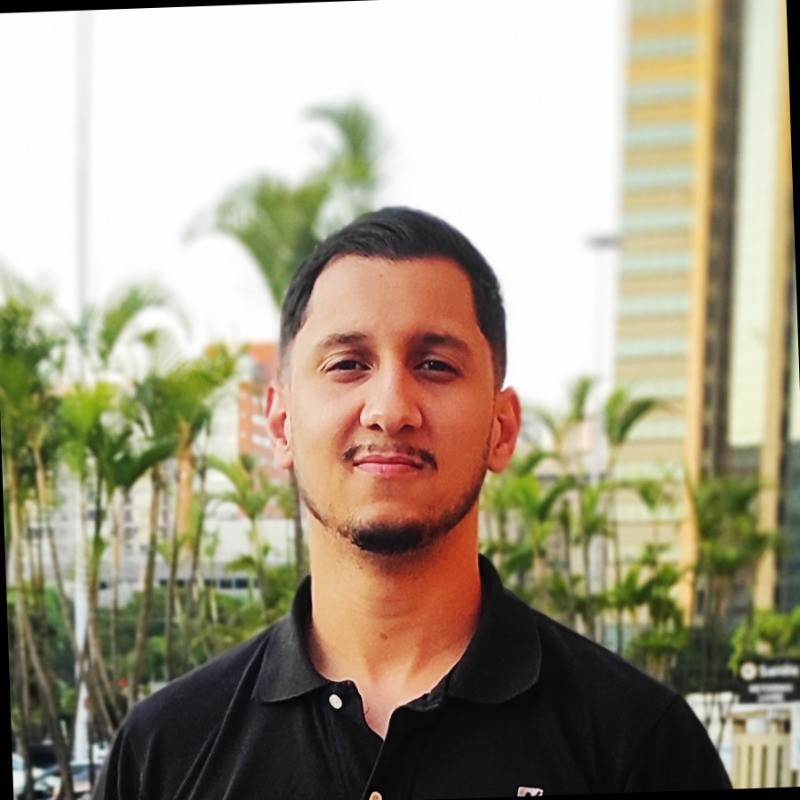

Quem Sou
Olá! Meu nome é Vagner, sou surdo (deficiente auditivo). Eu nasci em Jacobina, BA, e me mudei para São Paulo. Uso Libras (Língua Brasileira de Sinais). Trabalho como Analista de Infraestrutura de TI em uma empresa. Sou apaixonado por TI.
Amo viajar, fazer trilha na natureza e na montanha, gosto de ler um livro, amo jogar no videogame e outros.
